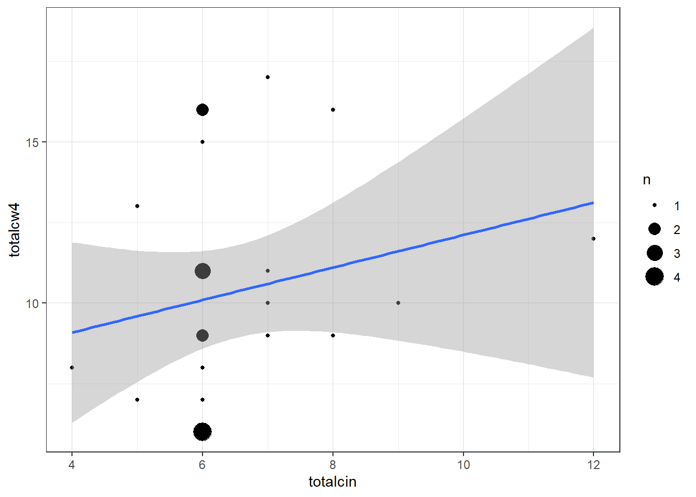
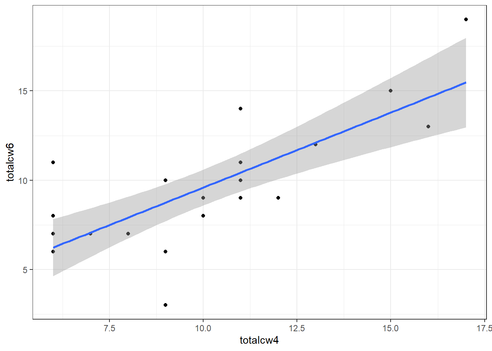
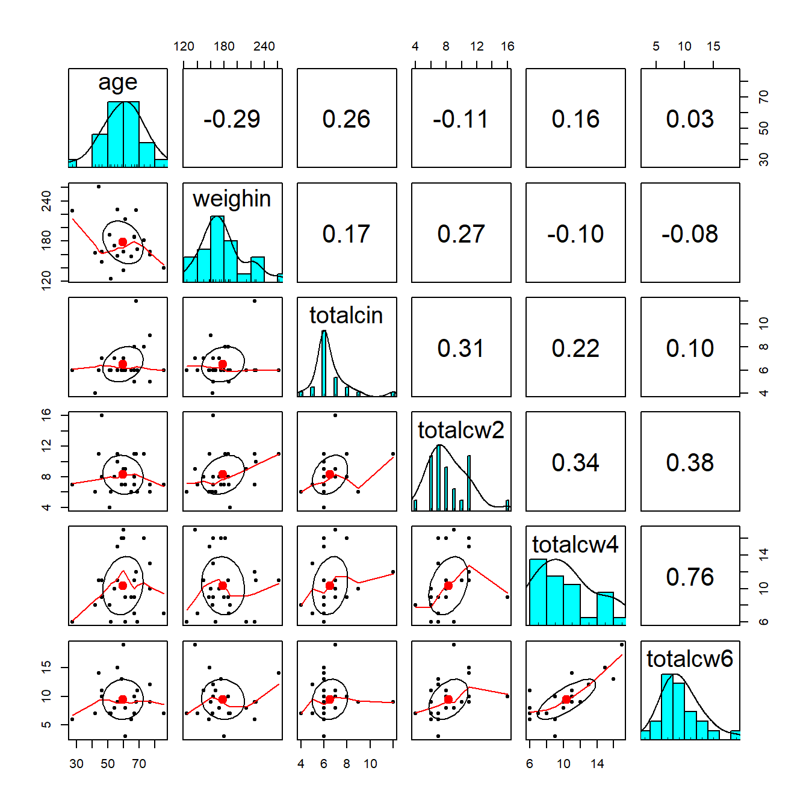

1 Linear Correlation - Example: Cancer Experiment
1.1 Background
1.1.1 Required Packages
library(tidyverse) # Loads several very helpful 'tidy' packages
library(haven) # Read in SPSS datasets
library(psych) # Lots of nice tid-bits
library(GGally) # Extension to 'ggplot2' (ggpairs)
library(corrplot) # Correlation Matrix plots
library(furniture) # tables
library(apaSupp) # APA 7th ed tables1.1.2 Example Dataset - Cancer Experiment
The Cancer dataset:
cancer_raw <- haven::read_spss("https://raw.githubusercontent.com/CEHS-research/eBook_ANOVA/master/data/Cancer.sav")
tibble::glimpse(cancer_raw)Rows: 25
Columns: 9
$ ID <dbl> 1, 5, 6, 9, 11, 15, 21, 26, 31, 35, 39, 41, 45, 2, 12, 14, 16…
$ TRT <dbl> 0, 0, 0, 0, 0, 0, 0, 0, 0, 0, 0, 0, 0, 0, 1, 1, 1, 1, 1, 1, 1…
$ AGE <dbl> 52, 77, 60, 61, 59, 69, 67, 56, 61, 51, 46, 65, 67, 46, 56, 4…
$ WEIGHIN <dbl> 124.0, 160.0, 136.5, 179.6, 175.8, 167.6, 186.0, 158.0, 212.8…
$ STAGE <dbl> 2, 1, 4, 1, 2, 1, 1, 3, 1, 1, 4, 1, 1, 2, 4, 1, 2, 1, 4, 2, 1…
$ TOTALCIN <dbl> 6, 9, 7, 6, 6, 6, 6, 6, 6, 6, 7, 6, 8, 7, 6, 4, 6, 6, 12, 5, …
$ TOTALCW2 <dbl> 6, 6, 9, 7, 7, 6, 11, 11, 9, 4, 8, 6, 8, 16, 10, 6, 11, 7, 11…
$ TOTALCW4 <dbl> 6, 10, 17, 9, 16, 6, 11, 15, 6, 8, 11, 9, 9, 9, 11, 8, 11, 6,…
$ TOTALCW6 <dbl> 7, 9, 19, 3, 13, 11, 10, 15, 8, 7, 11, 6, 10, 10, 9, 7, 14, 6…cancer_clean <- cancer_raw %>%
dplyr::rename_all(tolower) %>%
dplyr::mutate(id = factor(id)) %>%
dplyr::mutate(trt = factor(trt,
labels = c("Placebo",
"Aloe Juice"))) %>%
dplyr::mutate(stage = factor(stage))
tibble::glimpse(cancer_clean)Rows: 25
Columns: 9
$ id <fct> 1, 5, 6, 9, 11, 15, 21, 26, 31, 35, 39, 41, 45, 2, 12, 14, 16…
$ trt <fct> Placebo, Placebo, Placebo, Placebo, Placebo, Placebo, Placebo…
$ age <dbl> 52, 77, 60, 61, 59, 69, 67, 56, 61, 51, 46, 65, 67, 46, 56, 4…
$ weighin <dbl> 124.0, 160.0, 136.5, 179.6, 175.8, 167.6, 186.0, 158.0, 212.8…
$ stage <fct> 2, 1, 4, 1, 2, 1, 1, 3, 1, 1, 4, 1, 1, 2, 4, 1, 2, 1, 4, 2, 1…
$ totalcin <dbl> 6, 9, 7, 6, 6, 6, 6, 6, 6, 6, 7, 6, 8, 7, 6, 4, 6, 6, 12, 5, …
$ totalcw2 <dbl> 6, 6, 9, 7, 7, 6, 11, 11, 9, 4, 8, 6, 8, 16, 10, 6, 11, 7, 11…
$ totalcw4 <dbl> 6, 10, 17, 9, 16, 6, 11, 15, 6, 8, 11, 9, 9, 9, 11, 8, 11, 6,…
$ totalcw6 <dbl> 7, 9, 19, 3, 13, 11, 10, 15, 8, 7, 11, 6, 10, 10, 9, 7, 14, 6…psych::headTail(cancer_clean) %>%
flextable::flextable() %>%
apaSupp::theme_apa(caption = "Sample of Cancer Dataset")id | trt | age | weighin | stage | totalcin | totalcw2 | totalcw4 | totalcw6 |
|---|---|---|---|---|---|---|---|---|
1 | Placebo | 52 | 124 | 2 | 6 | 6 | 6 | 7 |
5 | Placebo | 77 | 160 | 1 | 9 | 6 | 10 | 9 |
6 | Placebo | 60 | 136.5 | 4 | 7 | 9 | 17 | 19 |
9 | Placebo | 61 | 179.6 | 1 | 6 | 7 | 9 | 3 |
... | ... | ... | ... | ... | ... | |||
42 | Aloe Juice | 73 | 181.5 | 0 | 8 | 11 | 16 | |
44 | Aloe Juice | 67 | 187 | 1 | 5 | 7 | 7 | 7 |
50 | Aloe Juice | 60 | 164 | 2 | 6 | 8 | 16 | |
58 | Aloe Juice | 54 | 172.8 | 4 | 7 | 8 | 10 | 8 |
1.3 Pearson’s Correlation Coefficient
1.3.1 Using the Default Settings
The cor.test() function needs at least TWO arguments:
formula - The formula specifies the two variabels between which you would like to calcuate the correlation. Note at the two variable names come AFTER the tilda symbol and are separated with a plus sign:
~ continuous_var1 + continuous_var2data - Since the datset is not the first argument in the function, you must use the period to signify that the datset is being piped from above
data = .
cancer_clean %>%
cor.test(~ age + weighin, # formula: order doesn't matter
data = .) # data piped from above
Pearson's product-moment correlation
data: age and weighin
t = -1.4401, df = 23, p-value = 0.1633
alternative hypothesis: true correlation is not equal to 0
95 percent confidence interval:
-0.6130537 0.1213316
sample estimates:
cor
-0.2875868 1.3.2 Additional Arguments
alternative - The
cor.test()function defaults to thealternative = "two.sided". If you would like a one-sided alternative, you must choose which side you would like to test:alternative = "greater"to test for POSITIVE correlation oralternative = "less"to test for NEGATIVE correlation.method - The default is to calculate the Pearson correlation coefficient (
method = "pearson"), but you may also specify the Kendall’s tau (method = "kendall")or Spearman’s rho (method = "spearman"), which are both non-parametric methods.conf.int - It also defaults to testing for the two-sided alternative and computing a 95% confidence interval (
conf.level = 0.95), but this may be changed.
Since the following code only specifies thedefaults, it Will give the same results as if you did not type out the last three lines (see above).
cancer_clean %>%
cor.test(~ age + weighin,
data = .,
alternative = "two.sided", # or "greater" (positive r) or "less" (negative r)
method = "pearson", # or "kendall" (tau) or "spearman" (rho)
conf.level = .95) # or .90 or .99 (ect)
Pearson's product-moment correlation
data: age and weighin
t = -1.4401, df = 23, p-value = 0.1633
alternative hypothesis: true correlation is not equal to 0
95 percent confidence interval:
-0.6130537 0.1213316
sample estimates:
cor
-0.2875868 Non-Significant Correlation
APA Results: There was no evidence of an association in overall oral condition from baseline to two week follow-up, $r(25) = -0.288 \(p < .163\).
1.3.3 Statistical Significance
cancer_clean %>%
ggplot(aes(x = totalcin,
y = totalcw4)) +
geom_count() +
geom_smooth(method = "lm") +
theme_bw()
Pearson's product-moment correlation
data: totalcin and totalcw4
t = 1.0911, df = 23, p-value = 0.2865
alternative hypothesis: true correlation is not equal to 0
95 percent confidence interval:
-0.1899343 0.5672525
sample estimates:
cor
0.2218459 Statistically Significant Correlation
APA Results: Overall oral condition was positively correlated (\(r = .763\)) between weeks two and four, \(t(21) = 5.409\), \(p < .001\).
cancer_clean %>%
ggplot(aes(x = totalcw4,
y = totalcw6)) +
geom_point() +
geom_smooth(method = "lm") +
theme_bw()
Pearson's product-moment correlation
data: totalcw4 and totalcw6
t = 5.4092, df = 21, p-value = 2.296e-05
alternative hypothesis: true correlation is not equal to 0
95 percent confidence interval:
0.5117459 0.8940223
sample estimates:
cor
0.762999 1.4 Correlation Tables
The may use the tableC() function from the furniture package to calculate all pair-wise correlations between more than two variables and arrange them all in a table. The table is formatted with the variabels listed on the rows and numbered to show the same variabels across the columns.
The cells ON the diagonal are all equal to exactly one, since each variable is perfectly correlated with itself.
The cells ABOVE the diagonal are blank as them would just be a mirror image of the values below the diagonal.
The cells BELOW the diagonal each contain the Pearson’s correlation coefficients for each pair of variables, \(r\), with the \(p-value\) showing the significance vs. the null hypothesis for no association (\(r = 0\)) to the right.
───────────────────────────────────────────────
[1] [2] [3]
[1]age 1.00
[2]weighin -0.288 (0.163) 1.00
[3]totalcin 0.256 (0.217) 0.17 (0.418) 1.00
───────────────────────────────────────────────1.4.1 Missing Values - Default
Default Behavior na.rm = FALSE (default)
If you don’t say otherwise, the correlation \(r\) with not be calculated (NA) between any pair of variables for which there is at least one subject with a missing value on at least one of the vairables. This is a nice alert to make you aware of missing values.
─────────────────────────────────────────────────────
[1] [2] [3] [4]
[1]totalcin 1.00
[2]totalcw2 0.314 (0.126) 1.00
[3]totalcw4 0.222 (0.287) 0.337 (0.099) 1.00
[4]totalcw6 NA NA NA NA NA NA 1.00
─────────────────────────────────────────────────────1.4.2 Missing Values - Listwise Deletion
Listwise Deletion na.rm = TRUE
Most of the time you will want to compute the correlation \(r\) is the precense of missing values. To do so, you want to remove or exclude subjects with missing data from ALL correlation computation in the table. This is called ‘list-wise deletion’. It ensures that all cells in the table refer to the exact same sub-sample (n = subjects with complete data for all variables in the table), and thus the same degrees of freedom (since \(df = n - 2\)). This is done be changing the default to na.rm = TRUE.
─────────────────────────────────────────────────────────────
[1] [2] [3] [4]
[1]totalcin 1.00
[2]totalcw2 0.282 (0.192) 1.00
[3]totalcw4 0.206 (0.346) 0.314 (0.145) 1.00
[4]totalcw6 0.098 (0.657) 0.378 (0.075) 0.763 (<.001) 1.00
─────────────────────────────────────────────────────────────cancer_clean %>%
furniture::tableC(totalcin, totalcw2, totalcw4, totalcw6,
na.rm = TRUE,
rounding = 2)
────────────────────────────────────────────────────────
[1] [2] [3] [4]
[1]totalcin 1.00
[2]totalcw2 0.28 (0.19) 1.00
[3]totalcw4 0.21 (0.35) 0.31 (0.15) 1.00
[4]totalcw6 0.1 (0.66) 0.38 (0.08) 0.76 (<.001) 1.00
────────────────────────────────────────────────────────1.4.3 APA Style
cancer_clean %>%
dplyr::select("Baseline" = totalcin,
"Week 2" = totalcw2,
"Week 4" = totalcw4,
"Week 6" = totalcw6) %>%
apaSupp::tab_cor(caption = "Correlations Between Repeated Measures of Total Oral Condition")Variables | r | p | ||
|---|---|---|---|---|
Baseline | Week 2 | 0.310 | .126 | |
Baseline | Week 4 | 0.220 | .287 | |
Baseline | Week 6 | 0.098 | .657 | |
Week 2 | Week 4 | 0.340 | .099 | |
Week 2 | Week 6 | 0.380 | .075 | |
Week 4 | Week 6 | 0.760 | < .001 | *** |
Note. r = Pearson's Product-Moment correlation coefficient. N = 25. | ||||
* p < .05. ** p < .01. *** p < .001. | ||||
1.5 Pairs Plots

1.5.2 Using the psych package
cancer_clean %>%
dplyr::select(age, weighin,
totalcin, totalcw2, totalcw4, totalcw6) %>%
psych::pairs.panels()
1.5.3 Using the ggplot2 and GGally packages
cancer_clean %>%
dplyr::select(age, weighin,
totalcin, totalcw2, totalcw4, totalcw6) %>%
data.frame %>%
ggscatmat() +
theme_bw()
cancer_clean %>%
data.frame %>%
ggscatmat(columns = c("age", "weighin",
"totalcin", "totalcw2", "totalcw4", "totalcw6"),
color = "trt") +
theme_bw()
1.6 Correlation Plots: Corrolagrams
1.6.1 Simple Correlation Matrix (Base R)
cancer_clean %>%
dplyr::select(age, weighin,
totalcin, totalcw2, totalcw4, totalcw6) %>%
cor(method = "pearson",
use = "complete.obs") age weighin totalcin totalcw2 totalcw4 totalcw6
age 1.00000000 -0.29909121 0.22386540 -0.1613892 0.09918029 0.03015273
weighin -0.29909121 1.00000000 0.16403694 0.2763478 -0.08013506 -0.07750304
totalcin 0.22386540 0.16403694 1.00000000 0.2819648 0.20604650 0.09786664
totalcw2 -0.16138924 0.27634783 0.28196479 1.0000000 0.31354250 0.37809488
totalcw4 0.09918029 -0.08013506 0.20604650 0.3135425 1.00000000 0.76299899
totalcw6 0.03015273 -0.07750304 0.09786664 0.3780949 0.76299899 1.000000001.6.2 Using the Default Settings
cancer_clean %>%
dplyr::select(age, weighin,
totalcin, totalcw2, totalcw4, totalcw6) %>%
cor(method = "pearson",
use = "complete.obs") %>%
corrplot::corrplot()
1.6.4 Only Displaying Half
cancer_clean %>%
dplyr::select(age, weighin,
totalcin, totalcw2, totalcw4, totalcw6) %>%
cor(method = "pearson",
use = "complete.obs") %>%
corrplot::corrplot(method = "ellipse",
type = "lower")